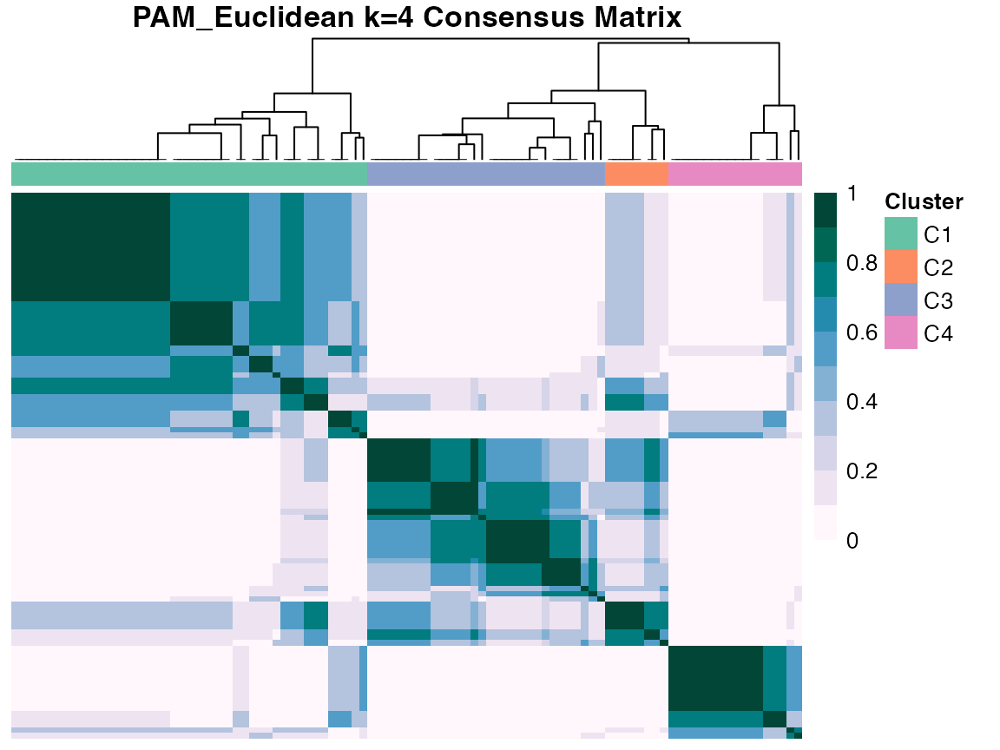

diceR
Cluster analysis is a way of “slicing and dicing” data to allow the grouping together of similar entities and the separation of dissimilar ones. Issues arise due to the existence of a diverse number of clustering algorithms, each with different techniques and inputs, and with no universally optimal methodology. Thus, a framework for cluster analysis and validation methods are needed. Our approach is to use cluster ensembles from a diverse set of algorithms so that the final class labels. This ensures that the data has been considered from several angles and using a variety of methods. We currently have implemented about 15 clustering algorithms, and we provide a simple framework to add additional algorithms (see XXX). Although, results are dependent on the subset of algorithms chosen for the ensemble, the intent is that we capture a variety of clustering ans select those that are most consistent with the data.
diceR is currently only available on GitHub.
# install.packages("devtools")
devtools::install_github("AlineTalhouk/diceR")library(diceR)
library(dplyr)
library(ggplot2)
library(knitr)
data(hgsc)We load an expression data set from TCGA of 489 high grade serous carcinoma samples measured on 321 genes.
When Monti et al. (2003) first introduced consensus clustering, the idea was to use one clustering algorithm on bootstrapped subsamples of the data. We implement some extensions where a consensus is reached across subsamples and across algorithms. The final cluster assignment is then computed using statistical transformations on the ensemble cluster.
The base function of this package is consensus_cluster(), which outputs cluster assignments across subsamples and algorithms, for different k (number of clusters). For example, let’s say we were interested in clustering the hgsc data into 3 or 4 clusters, using 80% resampling on 5 replicates, for these clustering algorithms: Hierarchical Clustering, PAM, and DIvisive ANAlysis Clustering (DIANA). Euclidean distance is used for all algorithms.
CC <- consensus_cluster(hgsc, nk = 3:4, p.item = 0.8, reps = 5,
algorithms = c("hc", "pam", "diana"))The output is a 4-dimensional array: rows are samples, columns are different bootstrap subsample replicates, slices are algorithms, and each “box” (4th dimension) is for a different k. Below are the first few cluster assignments for each replicate in the DIANA algorithm for k = 3.
str(CC)
#> int [1:489, 1:5, 1:3, 1:2] NA NA NA NA 1 1 1 NA 1 1 ...
#> - attr(*, "dimnames")=List of 4
#> ..$ : chr [1:489] "TCGA.04.1331_PRO.C5" "TCGA.04.1332_MES.C1" "TCGA.04.1336_DIF.C4" "TCGA.04.1337_MES.C1" ...
#> ..$ : chr [1:5] "R1" "R2" "R3" "R4" ...
#> ..$ : chr [1:3] "HC_Euclidean" "PAM_Euclidean" "DIANA_Euclidean"
#> ..$ : chr [1:2] "3" "4"
kable(head(CC[, , "DIANA_Euclidean", "3"]))| R1 | R2 | R3 | R4 | R5 | |
|---|---|---|---|---|---|
| TCGA.04.1331_PRO.C5 | NA | 1 | 1 | 2 | 2 |
| TCGA.04.1332_MES.C1 | NA | 1 | 1 | 2 | 2 |
| TCGA.04.1336_DIF.C4 | NA | 2 | 2 | 1 | 1 |
| TCGA.04.1337_MES.C1 | NA | 1 | 1 | 2 | 2 |
| TCGA.04.1338_MES.C1 | 2 | 1 | 1 | 2 | 2 |
| TCGA.04.1341_PRO.C5 | 2 | 1 | 1 | 2 | NA |
Note the unavoidable presence of NAs because we used 80% subsampling. This can be problematic in certain downstream ensemble methods, so we can impute missing values using K-Nearest Neighbours beforehand. There might still be NAs after KNN because of how the decision threshold was set. The remaining missing values can be imputed using majority voting.
CC <- apply(CC, 2:4, impute_knn, data = hgsc, seed = 1)
CC_imputed <- impute_missing(CC, hgsc, nk = 4)
sum(is.na(CC))
#> [1] 30
sum(is.na(CC_imputed))
#> [1] 0We can carry on the analysis using either CC or CC_imputed.
diceR provides functions for retrieving useful summaries and other results for consensus clustering.
consensus_matrix()
The consensus matrix is an n by n matrix, where n is the number of samples. Each element is a real-valued number between 0 and 1 inclusive, representing the proportion of times that two samples were clustered together out of the times that the same samples were chosen in the bootstrap resampling. The diagonal are all one’s. Suppose we wanted to compute the consensus matrix for PAM, k = 4, and visualize using graph_heatmap():
pam.4 <- CC[, , "PAM_Euclidean", "4", drop = FALSE]
cm <- consensus_matrix(pam.4)
dim(cm)
#> [1] 489 489hm <- graph_heatmap(pam.4)
consensus_combine()
If we wish to separately extract consensus matrices and consensus classes for every algorithm, consensus_combine() is a convenient wrapper to do so. Setting element = "matrix" returns a list of consensus matrices. On the other hand, setting element = "class" returns a matrix with rows as samples, and columns as clustering assignments for each algorithm.
ccomb_matrix <- consensus_combine(CC, element = "matrix")
ccomb_class <- consensus_combine(CC, element = "class")str(ccomb_matrix, max.level = 2)
#> List of 2
#> $ 3:List of 3
#> ..$ HC_Euclidean : num [1:489, 1:489] 1 1 1 1 1 1 1 1 1 1 ...
#> ..$ PAM_Euclidean : num [1:489, 1:489] 1 0.4 0.4 0.2 0.2 0.6 0.6 0.2 0.4 0.4 ...
#> ..$ DIANA_Euclidean: num [1:489, 1:489] 1 1 0 1 1 1 1 1 0 0 ...
#> $ 4:List of 3
#> ..$ HC_Euclidean : num [1:489, 1:489] 1 1 1 1 1 1 1 1 1 0.8 ...
#> ..$ PAM_Euclidean : num [1:489, 1:489] 1 0.4 0.4 0.2 0.2 0.6 0.6 0.2 0 0.2 ...
#> ..$ DIANA_Euclidean: num [1:489, 1:489] 1 1 0 1 1 1 1 1 0 0 ...
kable(head(ccomb_class$`4`))| HC_Euclidean | PAM_Euclidean | DIANA_Euclidean |
|---|---|---|
| 1 | 1 | 1 |
| 1 | 2 | 1 |
| 1 | 1 | 2 |
| 1 | 2 | 1 |
| 1 | 2 | 1 |
| 1 | 1 | 1 |
One can feed in ccomb_class (instead of CC) into consensus_matrix() to obtain a consensus matrix across both subsamples and algorithms.
A situation might also arise where we initially decided on using 3 clustering algorithms for the ensemble, but later wish to add additional algorithms for analysis. consensus_combine() takes in any number of ensemble objects (e.g. CC and CC2) and combines the results.
CC2 <- consensus_cluster(hgsc, nk = 3:4, p.item = 0.8, reps = 5,
algorithms = "km")
ccomb_class2 <- consensus_combine(CC, CC2, element = "class")kable(head(ccomb_class2$`4`))| HC_Euclidean | PAM_Euclidean | DIANA_Euclidean | KM_Euclidean |
|---|---|---|---|
| 1 | 1 | 1 | 1 |
| 1 | 2 | 1 | 2 |
| 1 | 1 | 2 | 3 |
| 1 | 2 | 1 | 2 |
| 1 | 2 | 1 | 2 |
| 1 | 1 | 1 | 1 |
consensus_evaluate()
Internal cluster validation indices assess the performance of results by taking into account the compactness and separability of the clusters. We choose a variety of indices on which to compare the collection of clustering algorithms. We use the PAC (Proportion of Ambiguous Clusters), the proportion of entries in a consensus matrix that are strictly between lower (defaults to 0) and upper (defaults to 1), to give a measure of cluster stability. In addition, if no reference class is provided, we calculate the average PAC across algorithms within each k, and choose the k with the greatest average PAC. If there is a reference class, k is the number of distinct classes in the reference.
ccomp <- consensus_evaluate(hgsc, CC, CC2, plot = FALSE)kable(ccomp$internal)
|
|
We see that the biclustering algorithm is the least ambiguous and also most well-clustered (high compactness and separability).
Some algorithms perform too poorly to deserve membership in the cluster ensemble. We consider the relative ranks of each algorithm across all internal indices, and compute their sum. All algorithms below a certain quantile for the sum rank are trimmed (removed). By default this quantile is 75%.
After trimming, we can optionally choose to reweigh the algorithms based on the internal index magnitudes. Of course, we take into account the direction of optimality (higher is better is lower is better). Algorithms reweighed are then fed into the consensus functions. This is done by replicating each algorithm by a scalar factor that is proportional to its weight. For example, if we have two algorithms A and B, and A is given a weight of 80% and B is given a weight of 20%, then we make 4 copies of A and 1 copy of B. To minimize computational time, the total number of copies out of all algorithms has an upper bound of 100. Without reweighing, each algorithm is given equal weight.
ctrim <- consensus_evaluate(hgsc, CC, CC2, trim = TRUE, reweigh = FALSE, n = 2)str(ctrim, max.level = 2)
#> List of 5
#> $ k : int 4
#> $ pac :'data.frame': 2 obs. of 5 variables:
#> ..$ k : chr [1:2] "3" "4"
#> ..$ HC_Euclidean : num [1:2] 0.0443 0.1963
#> ..$ PAM_Euclidean : num [1:2] 0.317 0.252
#> ..$ DIANA_Euclidean: num [1:2] 0.254 0.25
#> ..$ KM_Euclidean : num [1:2] 0.0864 0.0619
#> $ internal:List of 2
#> ..$ 3:'data.frame': 4 obs. of 16 variables:
#> ..$ 4:'data.frame': 4 obs. of 16 variables:
#> $ external: NULL
#> $ trim :List of 5
#> ..$ alg.keep : chr [1:2] "HC_Euclidean" "PAM_Euclidean"
#> ..$ alg.remove: chr [1:2] "DIANA_Euclidean" "KM_Euclidean"
#> ..$ rank.agg :List of 1
#> ..$ top.list :List of 1
#> ..$ data.new :List of 1The return value shows which algorithms were kept, removed (if any), and the trimmed (and potentially reweighed) cluster ensemble.